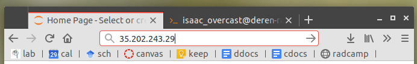

1. create a params file
$ ipyrad -n somename
$ nano params-somename.txt ## (edit, save, exit: ..., ctrl-o, ctrl-x)
$ ipyrad -p params-somename.txt -s 1234567
Enter given IP address into browser. No https// at beginning.

# home: the default location when you login
/home/isaac_overcast/
# 3RAD DATA directory (subdirectory for each dataset)
/media/RADCamp/
# Example files within a subdirectory
ls /media/RADCamp/Meek
Meek_barcodes.txt
raws/
Contains three items on each line, a name, the R1 barcode, and the read2 barcode.
# show all contents of the barcode file
cat /media/RADCamp/Meek/Meek_barcodes.txt
Pedicularis_430 CCGAAT ACGCAT
Pedicularis_442 TTAGGCA ACGCAT
Pedicularis_431 AACTCGTC ACGCAT
Pedicularis_13 GGTCTACGT ACGCAT
Pedicularis_457 GATACC ACGCAT
Pedicularis_455 AGCGTTG ACGCAT
Pedicularis_429 CTGCAACT ACGCAT
Pedicularis_25.1 TCATGGTCA ACGCAT
Pedicularis_25.2 CCGAAT GTATGCA
Pedicularis_39 TTAGGCA GTATGCA
Pedicularis_216 AACTCGTC GTATGCA
Pedicularis_200 GGTCTACGT GTATGCA
Pedicularis_31 GATACC GTATGCA
Pedicularis_25.3 AGCGTTG GTATGCA
Pedicularis_421 CTGCAACT GTATGCA
Pedicularis_38 TCATGGTCA GTATGCA
Paired data comes in two fastq files, one with _R1_ in the name and the other _R2_
# Example files within a subdirectory
ls /media/RADCamp/Meek/raws
19174FL-01-01-21_S21_R1_001.fastq.gz
19174FL-01-01-21_S21_R2_001.fastq.gz
You can always do a google search on your enzyme to find the overhang sequence that you expect to have attached to your reads. But I always recommend looking for it in your data directly. It will occur near the beginning of R1 or R2 and a common sequence after the barcode.
# use tab-completion to enter this long file path
less /media/RADCamp/Meek/raws/19174FL-01-01-21_S21_R1_001.fastq.gz
Once inside of less, press the / key once and you will see a prompt open in the lower left. Type ATCGG then Enter. This will highlight matches. Press q at any time to exit.
Every data set used one set or the other:
(EcoRI, NheI) or (BamHI, ClaI). As we did in the last slide, search for the sequences below in one or more data files using less.
In R1 files try one of the following:
BamHI: ATCGG (G/A)
EcoRI: GCTAG (A/C)
In R1 files try one of the following:
ClaI: CGATCC
NheI: TAATTC
3RAD can incorporate a unique molecular identifiers (UMI) into the i5 index.
@NB551405:60:H7T2GAFXY:1:11101:20590:1124 1:N:0:
AACTCGTCATCGGCATAAGCTAGACCATCTAAAGAACTTTTAAGACTAAAGCGGCATAAGCTAGACC...
+
AABBBBBBBBBBBBBBBBBBBBBBBBBBBBBBBBBBBBBBBBBBBBBBBBBBBBBBBBBBBBBBBBB...
@NB551405:60:H7T2GAFXY:1:11101:20590:1124 1:N:0:
CTCGTCAT+GATTGCCA
AACTCGTCATCGGCATAAGCTAGACCATCTAAAGAACTTTTAAGACTAAAGCGGCATAAGCTAATCT...
+
AABBBBBBBBBBBBBBBBBBBBBBBBBBBBBBBBBBBBBBBBBBBBBBBBBBBBBBBBBBBBBBBBB...
# move to your home directory
$ cd
# from here, make a directory in which to store all our work
$ mkdir empirical
# move into empirical
$ cd empirical/
# create a new params file and name it with your data set's name
$ ipyrad -n Meek
Ask for help if you are working on a different data set than one already on the cloud. We can help you to set up your params. Other cutter pair is GCTAG, TAATTC.
/media/RADCamp/Meek/raws/*_R*.fastq.gz ## [2] [raw_fastq_path]: ...
/media/RADCamp/Meek/Meek_barcodes.txt ## [3] [barcodes_path]: ...
pair3rad ## [7] [datatype]: ...
ATCGG, TAGCTT ## [8] [restriction_overhang]: ...
1 ## [15] [max_barcode_mismatch]: ...
2 ## [16] [filter_adapters]: ...
If your study organism has a closely related (~20Ma or less) published high quality genome available then download the FASTA file to your empirical/ directory.
/media/RADCamp/Meek/raws/*_R*.fastq.gz ## [2] [raw_fastq_path]: ...
/media/RADCamp/Meek/Meek_barcodes.txt ## [3] [barcodes_path]: ...
reference ## [5] [assembly_method]: ...
reference_file.fa ## [6] [reference_sequence]...
pair3rad ## [7] [datatype]: ...
ATCGG, TAGCTT ## [8] [restriction_overhang]: ...
1 ## [15] [max_barcode_mismatch]: ...
2 ## [16] [filter_adapters]: ...
Set it to run all seven steps and then you're done for now. Let's go get pizza. We can check in on it as it runs later. It will probably finish in 1-3 hours.
# start running all steps for your assembly
$ ipyrad -p params-Meek.txt -s 1234567